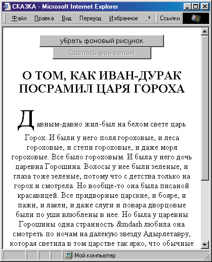
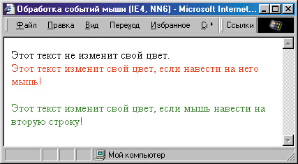
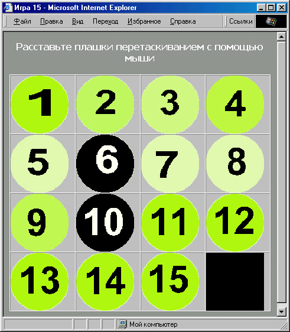

|
|
|
|
7.2. Страница, управляемая при помощи мыши
Мы уже говорили о том, что одним из самых привлекательных нововведе ний HTML 4.0 является возможность динамически изменять страницы и реагировать на действия пользователя. Давайте рассмотрим, как такая реакция может осуществляться.
Помните, как в примерах Главы 4 мы изменяли цвет гиперссылки при наведении на нее мыши? Это происходило с помощью псевдокласса :hover. Однако этот псевдокласс пока что определен только для тега <А> . А как быть, если мы хотим изменить цвет обычного текста при наведении на него мыши?
Рассмотрим, как это делается. Допустим, мы написали небольшую тесто вую страницу.
<!DOCTYPE HTML PUBLIC "-//W3C//DTD HTML 4.0 Transitional//EN">
<HTML>
<HEAD>
<ТIТLЕ>Обработка событий мыши</ТIТLЕ>
</HEAD>
<BODY> Этот текст не изменит свой цвет. Этот текст изменит свой цвет, если навести на него мышь! Этот текст не изменит свой цвет.
</BODY>
</HTML>
Реакция на наведение
Теперь давайте сделаем так, чтобы вторая строка этого текста действительно изменяла свой цвет при наведении указателя мыши. Для начала давайте выделим ее в отдельный блок:
<DIV>Этот текст изменит свой цвет, если навести на него мышь!</DIV>
Чтобы при наведении мыши что-нибудь произошло, нужно добавить обработчик событий onMouseOver:
<DIV onMouseOver="">Этот текст изменит свой цвет, если навести на него мышь</DIV>
Итак, обработчик добавлен, однако пока он ничего не делает. В кавычки нужно поместить то действие, которое он должен выполнить. А что он дол жен сделать? Изменить цвет этого блока <DIV> , например, на красный. Доступ к свойствам текущего элемента осуществляется с помощью ключевого слова this:
<DIV onMouseOver="this.style.colors'red">Этот текст изменит свой цвет, если навести на него мышь!</DIV>
Если теперь открыть эту страницу в броузере, то при наведении указателя мыши на вторую строку текста, цвет строки действительно изменится на красный. Однако, один раз изменившись, он так и останется красным. Чтобы при уводе указателя мыши со строки цвет изменился обратно на черный, добавим обработчик событий, реагирующий на увод указателя. Он называется onMouseOut:
<DIV onMouseOver="this.style.color"'red'" onMouseOut="this.style.color='black'">Этот текст изменит свой цвет, если навести на него мышь!</DIV>
Теперь при наведении указателя мыши на эту строку, ее цвет изменится на красный, а при уводе указателя — обратно на черный. Можно также использовать и доступ по названию элемента. Например, если установить в этом блоке атрибут ID="text1", то можно будет написать так:
<DIV ID="textl" onMouseOver="textl.style.color='red'" onMouseOut="textl.style.color='black'">Этот текст изменит цвет, если навести на него мышь!</DIV>
<DIV ID="textl" onMouseOver="document.all.textl.style.color='red'" onMouseOut="document.all.textl.style.color”'black'">Этот изменит свой цвет, если навести на него мышь!</DIV>
Обратите внимание на то, что внутри кавычек расположен текст, написанный на языке JavaScript. Чтобы не загромождать текст HTML-документа, можно заранее определить соответствующие функции в разделе <HEAD>:
<HEAD>
<ТIТLЕ>Обработка событий мыши</ТIТLЕ>
<SCRIPT LANGUAGE="JavaScript">
function change() { document, all. textl. style. color="red";
} .function change2() { document.all.textl.style.color="black";
} //--> </SCRIPT> </HEAD>
а при определении обработчиков событий писать только имена функций:
<DIV ID="textl" onMouseOver="change()" onMouseOut="change2()">Этот текст изменит свой цвет, если навести на него мышь!</DIV>
Результат будет тот же, что и в прошлый раз.
Таким же образом можно изменить не только тот блок текста, на который мы навели указатель мыши, но и любые другие элементы, если только присвоить им имя. Например, если мы хотим одновременно с изменением цвета второй строки на красный изменять цвет третьей строки, скажем, на зеленый, достаточно будет сначала присвоить третьей строке имя:
<DIV ID="text2">Этот текст изменит свой цвет, если мышь навести на вторую строку!</DIV>
а потом соответствующим образом изменить функции:
function change() { document.all.textl.style.color="red";
document.all.text2.style.color="green";
} function change2() {
document.all.textl.style.coior="black";
document.all.text2.style.color="black"; }
Теперь при наведении мыши на вторую строку ее цвет будет изменяться на красный, а цвет третьей строки — на зеленый. К сожалению, здесь начинают сильно сказываться различия между броузерами. Доступ через метод documental! будет работать в Internet Explorer, но не сработает в Netscape. Чтобы этот пример мог работать в Netscape 6, необходимо доступ через метод document, all заменить на доступ через метод document. getElementByld( ). А как быть, если мы хотим, чтобы этот пример работал и в Internet Explorer, и в Netscape 6?
Учет различий между броузерами
Такие вопросы обычно решаются не просто. Но в данном случае мы можем осуществить проверку версии броузера и, в зависимости от ее результата, присвоить переменной textl либо значение document.all.textl, либо значение document.getElementByld("text1"). А затем в функциях замены цвета просто подставлять эту переменную. То же самое можно проделать и с переменной text2. Только нужно не забыть заранее определить эти переменные:
var text1, text2; function brws()
{ if (navigator.appName!="Net scape")
{ textl=document.all.textl; text2=document.all.text2 ;
} else { textl=document.getElementById("textl") ;
text2=document.getElementById("text2"); } }
Теперь необходимо сделать так, чтобы нагла функция brws( ) выполнялась сразу после загрузки страницы. Для этого установим в теге <BODY> обработчик событий, реагирующий на загрузку элемента. Он называется onLoad:
<BODY onLoad="brws( )">
Посмотрим, что у нас получается в целом.
<!DOCTYPE HTML PUBLIC "-//W3C//DTD HTML 4.0 Transional//EN">
<HTML>
<HEAD>
<TITLE>06pa6oткa событий мыши (1Е4, NN6)</TITLE>
<SCRIPT LANGUAGE="JavaScript">
var textl, text2; function brws()
{ if (navigator.appName!="Netscape") ( textl=document.all.textl; text2=document.all.text2;
} else { textl=document.getElementById("textl") ; text2=document.getElementById("text2") ;
} } function change () { textl.style.color="red"; text2.style.color="green";
}
function change2() { textl.style.color="black"; text2. style. color="blacl<";
} //-->
</SCRIPT>
</HEAD>
<BODY onLoad="brws()"> Этот текст не изменит свой цвет.
<DIV !D="textl" onMouseOver="change() " onMouseOut="change2()">
Этот текст изменит свой цвет, если
навести на него мышь!
</DIV> <DIV !D="text2">Этот текст изменит свой цвет, если мышь навести на вторую строку!</DIV>
</BODY>
</HTML>
Результат можно увидеть на рис. 7.5. Теперь этот пример работает и в броузере Internet Explorer, и в броузере Netscape 6. Конечно, хотелось бы создавать такие страницы, которые бы работали по крайней мере в этих двух броузерах, потому что в Netscape версии 4 поддержка динамических страниц вообще очень слабая. Однако это не всегда возможно. В этой книге в дальнейшем все примеры будут ориентированы на броузер Internet Explorer версии 4 и выше (если специально не оговорено обратное).

Рис. 7.5. Страница, на которой цвет строк может изменяться
Кнопки, влияющие на вид страницы
Теперь рассмотрим такой пример. Предположим, мы разместили на веб- странице сказку, с градиентным феном. Однако, возможно, кому-то этот фон может помешать читать текст, и, заботясь о пользователе, хочется предусмотреть кнопку, при нажатии на которую фон становился бы равномерно зеленоватым. Для пользователей, пред почитающих читать черные буквы на белом фоне, можно предусмотреть возможность смены цвета фона на белый.
Для начала в соответствии с требованиями HTML 4.0 заменим атрибуты BGCOLOR= и BACKGROUND= тега <BODY> на соответствующие стилевые свойства:
<STYLE> BODY { background-color: #BFFFBF;
background-image: url("Images/gradi.jpg"); }
</STYLE>
Что же касается тега <BODY> , то ему желательно присвоить имя для облегчения доступа к его свойствам:
<BODY ID="doc">
Теперь добавим сверху две кнопки: одну для выключения фонового рисунка, а другую — для смены цвета фона на белый:
<DIV ALIGN="center"> <INPUT TYPE="button" VALUE="Убрать фоновый рисунок">
<INPUT TYPE="button" VALUE="Сделать фон белым"> </DIV>
Кнопки созданы, но пока при их нажатии ничего не происходит. Нам надо написать функцию, убирающую фоновый рисунок. Для этого нужно всего лишь стилевому свойству background-image присвоить значение none:
function noBg() { document.all.doc.style.backgroundlmage='none'; }
Обратите внимание на то, что в тексте на языке JavaScript (а не на языке CSS) нужно обязательно преобразовать название стилевого свойства с дефисом, как объяснялось выше.
Теперь нужно сделать так, чтобы наша функция noBg() выполнялась при щелчке мыши на первой из кнопок. Для этого надо в соответствующий тег кнопки добавить обработчик событий, реагирующий на щелчок мыши. Он называется onClick:
<INPUT TYPE="button" VALUE="y6paть фоновый рисунок" onClick="noBg ()">
Аналогично создадим функцию для смены цвета фона на белый:
function colChangeO ( document.all.doc.stylе.backgroundColor='white'; } и добавим ко второй кнопке обработчик события onClick:
<INPUT TYPE="button" VALUE="Cделать фон белым" onClick="colChange()">
Если теперь открыть эту страницу в броузере, то при нажатии на кнопку Убрать фоновый рисунок градиентный фоновый перелив исчезнет, уступив место зеленоватому цвету, а при нажатии на кнопку Сделать фон белым фон страницы действительно станет белым.
Однако неплохо бы дать пользователю и возможность обратной смены цвета и включения градиента. Он, конечно, может для этого нажать в броузере кнопку Обновить, однако рассчитывать на это некорректно, да и нс всякий пользователь сразу сообразит это сделать. Поэтому давайте при выключении фонового рисунка сменим надпись на кнопке. Для этого желательно дать кнопкам имена, например вот так:
<INPUT TYPE="button" NAME="buttl" VALUE="Убрать фоновый рисунок" onClick="noBg()">
<INPUT TYPE="button" NAME="butt2"VALUE="Сделать фон белым" onClick="colChange()">
Можно было, разумеется, использовать и атрибут ID= вместо NAME=. Для того чтобы изменить надпись на первой кнопке, достаточно изменить значение ее атрибута VALUE=:
document.all.butti.value='Вернуть фоновый рисунок';
Теперь давайте подумаем, как нам переделать функцию поВд(). Ведь она должна убирать фоновый рисунок, если он есть, и включать его, если его нет. Одновременно нужно соответствующим образом изменять надпись на кнопке. Следовательно, нужно сначала проверить, есть ли фоновый рисунок:
function noBg() { if (document.all.doc.style.backgroundlmage="none") { document.all.doc.style.backgroundlmage='none' ;
document.all.butti.value='Вернуть фоновый рисунок';
} else { document.all.doc.style.backgroundlmage="url('Images/gradi.jpg')"'; document.all.butti.values'Убрать фоновый рисунок'; } }
В первой строке функции мы сравниваем значение стилевого свойства backgroundlmage со значением none, и если оно с ним не совпадает, то, значит, фоновый рисунок есть. В этом случае мы присваиваем этому спой ятву значение none и изменяем надпись на кнопке на Вернуть фоновый рису (нок. В противном же случае мы присваиваем свойству backgroundlmage значение, содержащее имя файла фонового рисунка, и изменяем надпись на кнопке на первоначальную.
Таким же способом мы переделываем функцию colChange(). Сначала проверим значение свойства backgroundColor, и, если оно не совпадает со значением white (белый), присвоим ему это значение, а в противном случае присвоим первоначальное значение #BFFFBF. Одновременно будем изме нять и надпись на второй кнопке: function colChange() { it (document.all.doc.style.backgroundColor!='white'){ document.all.doc.style.backgroundColor"'white' ;
document.all.butt2.value='Сделать фон зеленым';
}
else { document.all.doc.style.backgroundColor='#BFFFBF' ; document.all.butt2,value='Сделать фон белым'; } } Теперь пользователь может с помощью первой кнопки включать и вык- лючать фоновый рисунок по желанию, а с помощью второй — переклю чать цвет фона с зеленоватого на белый и обратно. Однако остался еще один нерешенный вопрос. Дело в том, что если включен фоновый рису- нок, то переключение цвета фона не дает никакого видимого результат”, что может смутить пользователя. Поэтому, пока включен фоновый рису нок, лучше вообще не давать возможности нажимать на вторую кнопку. Internet Explorer позволяет сделать ее недоступной с помощью атрибут DISABLED. Поскольку изначально фоновый рисунок включен, установим этот атрибут сразу же при создании второй кнопки:
<INPUT TYPE="button" NAME="butt2" VALUE="Сделать фон белым" DISABLED onClick="colChange()">
А в функцию noBg( ) следует включить сброс атрибута DISABLED для второй кнопки при выключении фонового рисунка и, соответственно, уста новку этого атрибута при включении фона:
function noBg() { if (document.all.doc.style.backgroundlmage!="none") {
document.all.doc.style.backgroundlmage='none'; document.all.butti.value='Вернуть фоновый рисунок'; document.all.butt2.disabled=false; } else { document.a 11.doc.style.backgroundlmage="url('Images/gradi.jpg')"; document.all.butti.value='Убрать фоновый рисунок'; document.all.butt2.disabled=true; } }
Вот теперь все становится на свои места. Пользователь сможет только тогда воспользоваться кнопкой для смены цвета фона, когда фоновый рисунок выключен. Можно было бы, конечно, и просто сделать вторую кнопку невидимой (с помощью стилевого свойства visibility), однако, на наш взгляд, это было бы менее наглядно. Давайте посмотрим, что у нас получилось в целом.
<!DOCTYPE HTML PUBLIC "-//W3C//DTD HTML 4.0 TRANSITIONAL//EN"> <HTML> <HEAD> <TITLE>CKА3KА</TITLE> <STYLE> BODY { background-color: #BFFFBF; background-image: url("Images/gradi.jpg") ; } </STYLE> <SCRIPT> <!--function noBg() { if (document.all.doc.style.backgroundlmage!="none") { document.all.doc.style,backgroundlmage='none' ; document.all.butti.value='Вернуть фоновый рисунок'; document.all.butt2.disabled=false; } else {
document.all.doc.style.backgroundlmage= "url('Images/gradl.jpg')";
document, all .buttl .value='Убрать фоновый рисунок'; document.all.butt2.disabled=true;
} }
function colChangef)
{ if (document.all.doc.style.backgroundColor!='white')
{ document.all.doc.style.backgroundColor='white' ;
document.all.butt2.value='Сделать фон зеленым'; }
else { document.all.doc.style.backgroundColor='#BFFFBF'' document.all.butt2.value='Сделать фон белым';
}
}
//-->
</SCRIPT>
</HEAD>
<BODY ID="doc"> <DIV ALIGN="center">
<INPUT TYPE="button" NAME-"buttl" VALUE="y6paть фоновый рисунок" onClick="noBg()">
<INPUT TYPE="button" NAME-"butt2 VALUE="Сделать фон белым" DISABLED onClick="colChange()">
</DIV>
<BR>
<DIV ALIGN="center">
<IMG SRC="Images/hr2.gif" WIDTH="508" HEIGHT="18" BORDER="0" ALT""></DIV>
<DIV ALIGN="center">
<IMG SRC="Images/skazk.gif" WIDTH="359" HEIGHT="150" BORDER="0" ALT="CKA3KA"><BR>
<H2> О ТОМ, КАК ИВАН-ДУРАК ПОСРАМИЛ ЦАРЯ ГOPOXA</H2></DIV>
<DIV ALIGN="justify"><IMG SRC="Images/bukvical.gif" WIDTH="121" HEIGHT="111" BORDER="0" ALIGN="LEFT" ALT="Д">
авным-давно жил-был на белом свете царь Горох. И были у него поля гороховые, и леса гороховые, и степи гороховые, и даже моря гороховые. Все было гороховым. И была у него дочь — царевна Горошина. Волосы у нее были зеленые, и глаза тоже зеленые, потому что с детства только на горох и смотрела. Но вообще-то она была писаной красавицей. Все придворные царские, и бояре, и пажи, и лакеи, и даже слуги и повара дворцовые были по уши влюблены в нее. Но была у царевны Горошины одна странность — любила она смотреть по ночам на далекую звезду Адырлетавру, которая светила в том царстве так ярко, что обычные люди на той стороне, где звезда была, даже окон в домах не делали. <BR><BR>
<FONT SIZE="+3">............................................
</FONT><BR><BR>
Тут и сказке конец, а кто слушал — молодец, ему пряник в награду и кило мармеладу.<BR> </DIV>
<DIV ALIGN="center"><IMG SRC=" Images/hr2 .gif" WIDTH="508" HEIGHT="18" BORDER="0" ALT=""></DIV>
</BODY>
</HTML>
Результат показан на рис. 7.6. Так страница будет выглядеть сразу после загрузки. Обратите внимание на то, что вторая кнопка изначально недоступна. Для красоты мы отделили наши кнопки от основного текста тем же разделителем, который использован в конце страницы.

Рис. 7.6. Веб-страница, на которой “бесполезная” в данный момент кнопка недоступна
Заметим, что приведенная выше страница будет работать только в Internet Explorer. Ее можно заставить работать и в Netscape 6 тем же способом, который мы применили в предыдущем примере — путем написания функции, присваивающей одной и той же переменной либо значение document.all, либо document.getElementByld, в зависимости от типа броузера:
var doc, butti, butt2; function brws(),
{ if (navigator.appName!""Netscape") ( buttl=dofc.ument .all. butti; butt2=docwnent.all.butt2; doc=docunysnt. all. doc;
}
else (
buttl=document.getElementById("buttl") ;
butt2=document.getElementById("butt2") ;
doc=document.getElementById("doc") ;
} }
Затем следует переписать функции noBg() и colChange( ), убрав из них обра щение document.all:
function noBg() { if (doc.style.backgroundlmage!="none")
{ doc.style.backgroundlmage='none' ; butti,value='Вернуть фоновый рисунок'; butt2.disabled=false;
} else {
doc.style.backgroundlmage="url('Images/gradi.jpg')";
butti.value='Убрать фоновый рисунок'; butt2.disabled=true;
}
function colChange()
{ if (doc.style.backgroundColor!='white')
{ doc.style.backgroundColor='white' ; butt2.value='Сделать фон зеленым';
} else { doc.style.backgroundColor='#BFFFBF' ;
butt2.value='Сделать фон белым'; } }
И, наконец, назначить выполнение функции brws() сразу после загрузки страницы:
<BODY ID="doc" onLoad="brws()">
Теперь наш код будет одинаково работать и в Internet Explorer 4+, и в Netscape 6. Что касается Netscape 4, то, если постараться, можно заставить эту стра ницу работать и там, но это будет довольно сложно. В Netscape 4 нельзя получить доступ непосредственно к свойствам тега <BODY> , однако броузер можно “обмануть”, использовав либо тег <LAYER> и коллекцию document.layers, либо свойства типа document.body.bgColor. Давайте лучше не будем этим заниматься, тем более что смотреть нашу страницу в Netscape 4 все равно можно, просто обе наши кнопки в нем вообще не отобразятся (этот броу зер не воспринимает теги <INPUT> вне элемента <FORM> ).
Реализация операций перетаскиванием
Итак, мы рассмотрели несколько основных обработчиков событий. Однако существуют и другие события мыши. Например, веб-страница может отдельно реагировать на нажатие кнопки мыши, на ее отпускание и даже на ее движение. Для чего это может понадобиться? Одно из возможных применений — это реализация так называемой технологии drag-and-drop, (проще говоря — перетаскивания экранных объектов с помощью мыши. Для иллюстрации рассмотрим несложный пример.
Предположим, вы хотите проиллюстрировать на своей странице знаменитую игру Лойда “Пятнадцать”, например так, как показано на рис. 7.7. Нужно, вроде бы, сначала просто задать стиль для текста:
<STYLE> BODY { . background-color: #979797; color: #FEFEFE; text-align: center;
font-weight: bold; font-size: 30рх;
font-family: sans-serif; . } </STYLE>
затем вывести на экран заголовок; потом создать центрированный блок ( <DIV> ) с фиксированной шириной и высотой, а также небольшим отсту- пом сверху, заданным с помощью стилевого свойства margin-top:
<DIV ALIGN="center" STYLE="width: 400px; height: 400px; margin-top: 25px;">
Теперь осталось вставить в этот блок таблицу, у которой был бы опреде лен фоновый цвет, отличающийся от основного фона страницы, а также тонкие границы между ячейками:

Рис. 7.7. Страница, иллюстрирующая игру “Пятнадцать”
<TABLE BGCOLOR="#COCOCO" WIDTH="100%" CELLSPACING="0" CELLPADDING="0" BORDER="1">
и в каждую ячейку этой таблицы поместить заранее подготовленное изображение плашки с цифрой', например, вот так:
<TD WIDTH="25%" ID="cl"><IMG SRC="Images/digitl.gif" WIDTH="100" HEIGHT="100" BORDER="0" ALT="1"></TD>
Вообще говоря, поскольку ширина (и высота) рисунков определены в 100 пикселов, атрибут WIDTH= указывать для тега <TD> совсем не обязательно. Что же касается атрибута ID=, то мы здесь указали его с расчетом на то, что плашки придется переставлять, и тогда потребуется доступ к ячейкам таблицы.
Все это замечательно, если исходная позиция задана изначально. Однако предположим, что мы хотим дать пользователю возможность самому рас ставить плашки. Пусть в начале игры все они расположены вне игрового поля. Можно даже расположить их друг на друге. Пользователь при этом должен иметь возможность перетянуть мышью каждую из плашек на одну из клеток игрового поля. Для этого придется сделать три вещи.
Во-первых, при нажатии кнопки мыши нужно определить, в каком месте окна броузера она нажата. Если нажатие произошло на рисунке плашки, нужно сразу же “привязать” этот рисунок к указателю мыши, чтобы он передвигался вместе с ним, пока кнопка не будет отпущена.
Во-вторых, во время движения указателя необходимо передвигать вслед за ним этот рисунок (но только в том случае, если пользователь еще не отпустил кнопку мыши). Если же мышь передвигается с отпущенной кнопкой, ничего происходить не должно.
И, в-третьих, при отпускании кнопки мыши нужно оставить рисунок на том месте, куда он был передвинут.
|
|
|
|